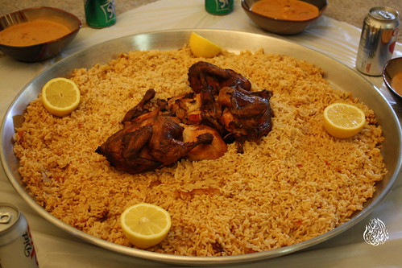

Kabsah

Kabsah is an Arab mixed rice dish, served on a communal platter,
that originates from Saudi Arabia And it's commonly regarded as a
national dish in all the countries of the Arabian Peninsula.
Ingredients:
- Rice
- Meat
- Water
- Salt
- Salsa
- Spices
Steps:
- Boil the water and put the meat and salt and salsa and spices and leave it for 30 minutes
- Put the rice and wait until the water is gone
- Happy eating!